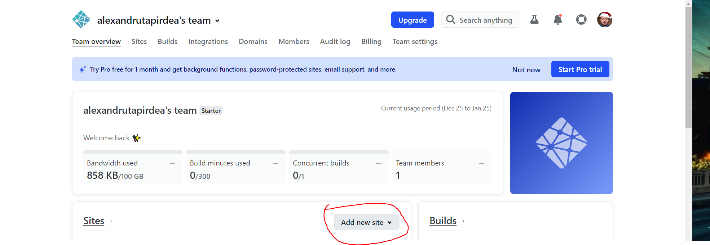

Cum pun(hostez) un site online ?
Cand punem un site online spunem ca "il hostam" sau "ii facem deploy".(o
sa auzi asta des in orice companie sau chiar in cursuri pe youtube).
Noi o sa folosim un site care se numeste Nelify. Este gratuit.
Link catre Netlify
Pasi de urmat:
- Apasam pe butonul de Login in de pe Netlify si selectam GitHub
- Apasam butonul "Add new site"

- Selectam "Import an existing project"
-
Va spuneam ca exista mai multe alternative la Github. Noi o sa selectam
Github pentru ca asa folosim si acolo veti avea voi codul proiectelor
voastre
-
Selectam proiectul pe care vrem sa-l punem online. La voi o sa fie
repository-ul unde aveti codul proiectului de html si css
-
Selectati branch-ul pe care il doriti. De regula este master, dar puteti
alege orice branch vreti daca l-ati denumit diferit.
- Apasati butonul "Deploy site"
-
Netlify ne-a generat un nume random(aleatoriu) pentru site-ul nostru. In
cazul meu este superb-pasca-d9d725.netlify.app . O sa-l renumesc in ce
vreau eu apasand pe "Edit site name"
- Observ ca mi s-a actualizat numele site-ului in setari.
-
O sa merg pe site-ul-meu-mininat.netlify.app sa vad ca este online. E
posibil sa dureze cateva minute pana cand site-ul devine online. Aveti
putina rabdare si dati refresh la pagina.
Felicitari, aveti site-ul online, in 10 pasi simplu de urmarit.